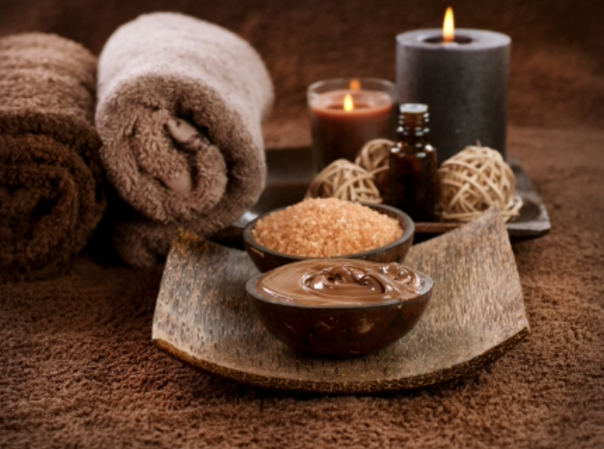

Services
California spa and beauty center provides following services
Thalassotherapy
Treatment and relaxation procedure using seafood: algae, salt, salt water. After going through this procedure, you can achieve body mineralization as a whole. Thalassotherapy treatments include baths with underwater massage; body wraps with alluvial mud, algae (red, blue and brown) or different types of micronized seaweed, which deliver the minerals in more concentrated forms.
Ozone therapy
During this procedure, the problem areas of the client's face and body are carefully injected by ozon. This substance affects the hormonal background, thereby improving metabolism and restoring oxygen transport. Ozone is a form of oxygen. In alternative medicine, practitioners of ozone therapy use gas or liquid forms of ozone to treat medical conditions and as a topical disinfectant. People have practiced ozone therapy in medical contexts for many years. However, its use is now controversial amid safety concerns.
Peeling
A chemical peel is a form of exfoliation that uses a chemical solution to remove dead skin cells from the top layer of skin. Treatment time for a chemical peel can take up to 30 minutes. During this procedure there are used different acidic solutions (salicylic acid, lacitic acid, glycolic acid) on the skin in order to stimulate the skin exfoliation, depigmentation and revitalization through promotion of the glucosaminoglicans, fibroblasts and remodeling of the elastin and collagen fibers.
Wrapping
A body wrap - also known as a 'body cocoon' or 'body mask' - is a spa treatment created to enhance the health and appearance of skin, and reduce body measurements. Body wraps combine therapeutic masks — herbal pastes, mineral-rich muds or soothing creams — with thermal coverings. The body mask will contain a mixture of ingredients designed to have a remedial effect on your skin, while the coverings will swathe and warm your body, promoting muscle relaxation, and sweating to cleanse your pores.
Body streaming
Body steaming reduces muscle tension, perfectly moisturizes and regenerates the skin, as well as cleanses the body of toxins. Post exercise muscles are in desperate need of relaxation in order to promote quick and healthy recovery. When your muscles are relaxed this recovery process which is vital for muscle gains is expedited and your muscles grow more quickly.
Massage
Stimulating the soft tissues of your body will help to release toxins through your blood and lymphatic systems. Massage therapy will loosen and relax your muscles, helping your body to achieve its full range of movement potential. Massage therapy also relieves common ailments such as thoracic outlet and carpal tunnel syndrome, chronic lower back pain, pain caused by sciatic nerve restriction, and TMJ syndrome.
Lifting
The benefits of lifting weights include building muscle, burning body fat, strengthening your bones and joints, reducing injury risk, and improving heart health. To lift weights safely, it's important to start slow, take rest days, and always use proper form. Stronger muscles can improve your posture and help keep your body in balance. Stronger muscles can prevent injuries.
Wellness
Wellness matters because everything we do and every emotion we feel relates to our well-being. In turn, our well-being directly affects our actions and emotions. Therefore, it is important for everyone to achieve optimal wellness in order to subdue stress, reduce the risk of illness and ensure positive interactions.
Bubble baths
Submergence in water helps to reduce pain and inflammation in the muscles and body, making bubble baths a great way to help our bodies heal. Heat gets your blood moving, which is not only great for circulation, but can also help sore or tight muscles to relax.
Sauna
Saunas have been traditionally used to produce a feeling of relaxation. As your heart rate goes up and your blood vessels dilate, there is an increase in blood flow to the skin. Saunas may also improve blood circulation. Your sympathetic nervous system becomes more active in order to maintain a temperature balance in your body
Reflexology
Reflexology aims to keep qi flowing through the body, keeping it balanced and disease free. In Chinese medicine, different body parts correspond with different pressure points on the body. Reflexologists use maps of these points in the feet, hands, and ears to determine where they should apply pressure.
Hydrotherapy
Hydrotherapy can help you in a number of different ways: The warmth of the water allows your muscles to relax and eases the pain in your joints, helping you to exercise. The water supports your weight, which helps to relieve pain and increase the range of movement of your joints..